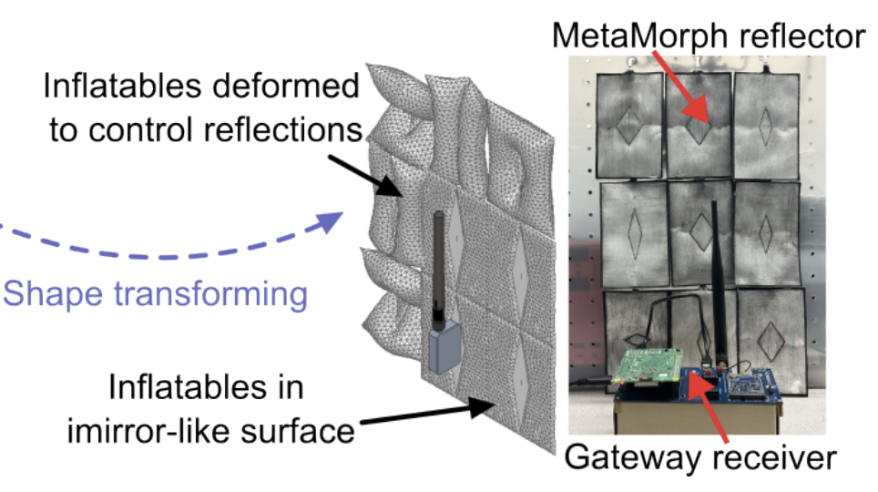

Project Metamorph: Shape-programming Robotic Reflectors for Wireless Networks
|
 |
|
|
| With the increasing use of wireless technologies in robotics for communication, sensing, and localization, the potential benefits of how robotics can complement and enhance wireless systems remain underexplored. This paper explores a novel application of the existing inflatable robots for wireless communication systems by forming a shape-programming, reflective waveguide that enhances the received signal quality for wireless devices. Our primary target is enhancing Low-Power Wide-Area Networks (LP-WANs) – where 10-year batterypowered client devices (e.g. energy meters or smart home sensors) connect to cellular-like base stations to deliver data. Devices in these networks often experience significant seasonal variability in battery life – even simple obstructions between the device and base station (e.g. due to construction) can shave off years of battery life. We propose MetaMorph, a programmable robotic reflector attached to base stations that enhances signal quality from client devices by enhancing received signal energy with controlled reflections. We investigate the design of the reflector, and our experiments show the ability to improve the signal quality for LP-WAN (LoRa) communication systems demonstrating signal quality and battery-benefits. To our best knowledge, MetaMorph is the first paper to explore how flexible robotics can serve as virtuous reflectors for wireless communication systems. |
Citation
- Shape-programming Robotic Reflectors for Wireless Networks, Yawen Liu, Akarsh Prabhakara, Jiangyifei Zhu, Shenyi Qiao, Swarun Kumar, ICRA 2025 [PAPER]